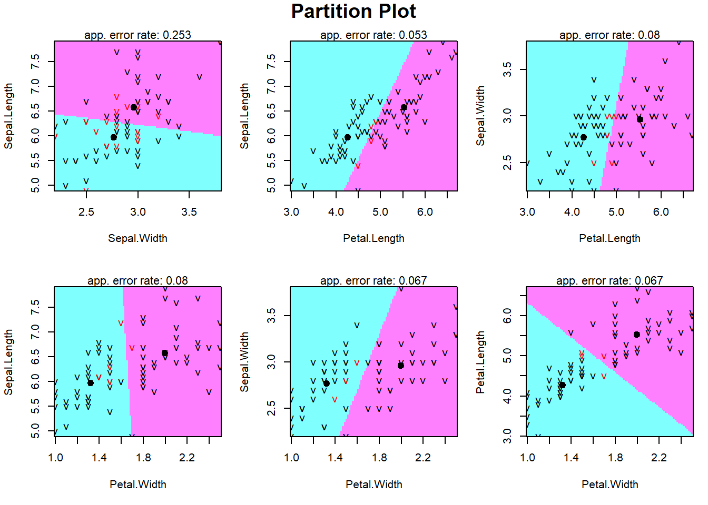
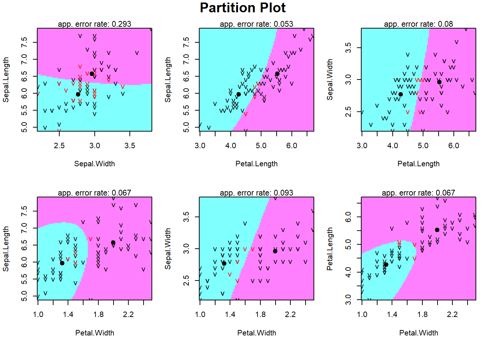

9 Classical Methods
The classical methods covered are Mahalanobis distance, Bayesian posterior, Fisher’s LDA and QDA.
9.1 Mahalanobis Distance Method
The idea is to classify observation to the class with the shortest Mahalanobis distance to the class center. That is \[ y <- \mbox{argmin}_i (\mathbf{x}-\mbox{\boldmath ${\mu_i}$})^T\mbox{\boldmath ${\Sigma}$}_i^{-1} (\mathbf{x}-\mbox{\boldmath ${\mu_i}$}) \] where \(\mbox{\boldmath ${\mu_i}$}\) and \(\mbox{\boldmath ${\Sigma}$}_i\) are the mean vector and variance-covariance matrix of class \(i\).
9.2 Bayes Posterior
Suppose there are \(K\) classes, \(\mathbf{x}|Y=i \sim f_i(\mathbf{x})\), and the relative frequency of each class is \(P(Y=i)=\pi_i\) (we call this the prior). By Bayes rule, the posterior probability is \[ P(Y=i|\mathbf{x})=\frac{P(Y=i, \mathbf{x})}{P(\mathbf{x})}=\frac{P(\mathbf{x}|Y=i)P(Y=i)}{\displaystyle\sum_{j=1}^KP(\mathbf{x}|Y=j)P(Y=j)}=\frac{f_i(\mathbf{x})\pi_i}{\displaystyle\sum_{j=1}^K f_j(\mathbf{x})\pi_j}\propto f_i(\mathbf{x})\pi_i \] Assign the observation \(\mathbf{x}\) to the class yielding the largest posterior probability, i.e., \[ y=\mbox{argmax}_i \frac{f_i(\mathbf{x})\pi_i}{\displaystyle\sum_{j=1}^K f_j(\mathbf{x})\pi_j}=\mbox{argmax}_i f_i(\mathbf{x})\pi_i. \] If there are only two classes, \(K=2\), assign \(\mathbf{x}\) to class 1 if the posterior probability \(P(Y=1|\mathbf{x})\ge P(Y=2|\mathbf{x})\), i.e., if \(P(Y=1|\mathbf{x})\ge 0.5\).
If we further assume the distributions \(f_i\) are multivariate normal distributions, we can obtain the discriminant function in a close form. If \(\mathbf{X}|Y=0\sim MVN(\mbox{\boldmath ${\mu}$}_0, \mbox{\boldmath ${\Sigma}$}_0), \mathbf{X}|Y=1\sim MVN(\mbox{\boldmath ${\mu}$}_1, \mbox{\boldmath ${\Sigma}$}_1)\), The Bayesian posterior is given by \[ P(Y=0|\mathbf{x})=\frac{\pi_0 f_0(\mathbf{x})}{\pi_0 f_0(\mathbf{x})+\pi_1 f_1(\mathbf{x})}, \quad P(Y=1|\mathbf{x})=\frac{\pi_1 f_1(\mathbf{x})}{\pi_0 f_0(\mathbf{x})+\pi_1 f_1(\mathbf{x})} \] Assign the observation \(\mathbf{x}\) to class 0 if \(P(Y=0|\mathbf{x})\ge P(Y=1|\mathbf{x})\) or \[ \frac{P(Y=0|\mathbf{x})}{P(Y=1|\mathbf{x})}\ge 1 \Longrightarrow \log \frac{P(Y=0|\mathbf{x})}{P(Y=1|\mathbf{x})}=\log \frac{\pi_0 f_0(\mathbf{x})}{\pi_1 f_1(\mathbf{x})}\ge 0 \] That is \[\begin{align*} &\log \frac{P(Y=0|\mathbf{x})}{P(Y=1|\mathbf{x})}=\log \frac{\pi_0}{\pi_1}+\log \frac{f_0(\mathbf{x})}{f_1(\mathbf{x})}=\log \frac{\pi_0}{\pi_1}+\log \left\{\frac{\frac{1}{(2\pi)^{p/2}|\mbox{\boldmath ${\Sigma}$}_0|^{1/2}}\exp \left[-\frac{(\mathbf{x}-\mbox{\boldmath ${\mu_0}$})^{T}\mbox{\boldmath ${\Sigma_0}$}^{-1} (\mathbf{x}-\mbox{\boldmath ${\mu_0}$})}{2}\right]}{\frac{1}{(2\pi)^{p/2}|\mbox{\boldmath ${\Sigma}$}_1|^{1/2}}\exp \left[-\frac{(\mathbf{x}-\mbox{\boldmath ${\mu_1}$})^{T}\mbox{\boldmath ${\Sigma_1}$}^{-1} (\mathbf{x}-\mbox{\boldmath ${\mu_1}$})}{2}\right]}\right\}\\ &=\log \frac{\pi_0}{\pi_1}+\frac{1}{2}\log\left(\frac{|\mbox{\boldmath ${\Sigma}$}_0|}{|\mbox{\boldmath ${\Sigma}$}_1|}\right)-\frac{1}{2}\left[(\mathbf{x}-\mbox{\boldmath ${\mu_0}$})^{T}\mbox{\boldmath ${\Sigma}$}_0^{-1} (\mathbf{x}-\mbox{\boldmath ${\mu_0}$})-(\mathbf{x}-\mbox{\boldmath ${\mu_1}$})^{T}\mbox{\boldmath ${\Sigma}$}_1^{-1} (\mathbf{x}-\mbox{\boldmath ${\mu_1}$}) \right]\\ &=C-\frac{1}{2}\left[\mathbf{x}^T\mbox{\boldmath ${\Sigma}$}_0^{-1}\mathbf{x}-\mbox{\boldmath ${\mu_0}$}^T\mbox{\boldmath ${\Sigma}$}_0^{-1}\mathbf{x}-\mathbf{x}^T\mbox{\boldmath ${\Sigma}$}_0^{-1}\mbox{\boldmath ${\mu_0}$}+\mbox{\boldmath ${\mu_0}$}^T\mbox{\boldmath ${\Sigma}$}_0^{-1}\mbox{\boldmath ${\mu_0}$}-\mathbf{x}^T\mbox{\boldmath ${\Sigma}$}_1^{-1}\mathbf{x}+\mbox{\boldmath ${\mu_1}$}^T\mbox{\boldmath ${\Sigma}$}_1^{-1}\mathbf{x}+\mathbf{x}^T\mbox{\boldmath ${\Sigma}$}_1^{-1}\mbox{\boldmath ${\mu_1}$}-\mbox{\boldmath ${\mu_1}$}^T\mbox{\boldmath ${\Sigma}$}_1^{-1}\mbox{\boldmath ${\mu_1}$}\right] \end{align*}\]
The idea of discriminant function can be generalized to three classes problems.In general, we assign \(\mathbf{x}\) to the class giving the largest value of \(\delta(\cdot)\), i.e., \(y=\mbox{argmax}_i \delta_i(\mathbf{x})\) where the \(\delta(\cdot)\) is defined as \[\begin{align*} \delta_i(\mathbf{x})&=\log(\pi_i)+\mbox{\boldmath ${\mu}$}_i^T\mbox{\boldmath ${\Sigma}$}^{-1}\mathbf{x}-\frac{1}{2}\mbox{\boldmath ${\mu}$}_i^T\mbox{\boldmath ${\Sigma}$}^{-1}\mbox{\boldmath ${\mu}$}_i, i=1, 2, \cdots, k, \mbox {for LDA}\\ \delta_i(\mathbf{x})&=\log(\pi_i)-\frac{1}{2}\log|\mbox{\boldmath ${\Sigma}$}_i|-\frac{1}{2}(\mathbf{x}-\mbox{\boldmath ${\mu}$}_i)^T\mbox{\boldmath ${\Sigma}$}_i^{-1}(\mathbf{x}-\mbox{\boldmath ${\mu}$}_i), i=1, 2, \cdots, k, \mbox {for QDA} \end{align*}\]
9.3 Fisher’s Discriminant Analysis
For Fisher’s discriminant analysis, we do not assume the distribution of \(\mathbf{X}\) is multivariate normal. And we want to find a linear combination (projection) of \(\mathbf{X}\), such that the between-group variation in the new coordinate is maximized. That is to find \[ \mbox{argmax}_{\mathbf{a}} \frac{\mathbf{a}^T\mathbf{S}_B\mathbf{a}}{\mathbf{a}^T\mathbf{S}_W\mathbf{a}} \] which is equivalent to finding \(\mbox{argmax}_{\mathbf{a}} \mathbf{a}^T\mathbf{S}_B\mathbf{a}\) with the constraint \(\mathbf{a}^T\mathbf{S}_W\mathbf{a}=1\). By Lagrange multiplier method, the objective function is \[ Q= \mathbf{a}^T\mathbf{S}_B\mathbf{a}-\lambda(\mathbf{a}^T\mathbf{S}_W\mathbf{a}-1) \] \[\begin{align*} \frac{\partial Q}{\partial \mathbf{a}}&=2\mathbf{S}_B\mathbf{a}-2\lambda \mathbf{S}_W \mathbf{a}=0 \Longrightarrow \mathbf{S}_B\mathbf{a}=\lambda \mathbf{S}_W\mathbf{a} \Longrightarrow \mathbf{S}_W^{-1}\mathbf{S}_B\mathbf{a}=\lambda\mathbf{a}\\ \frac{\partial Q}{\partial \lambda}&=\mathbf{a}^T\mathbf{S}_W\mathbf{a}-1=0\Longrightarrow \mathbf{a}^T\mathbf{S}_W\mathbf{a}=1 \end{align*}\] The first equation implies that \(\lambda\) is an eigenvalue of the matrix \(\mathbf{S}_W^{-1}\mathbf{S}_B\) and \(\mathbf{a}\) is the corresponding eigenvector. The first equation also implies that \(\mathbf{a}^T\mathbf{S}_B\mathbf{a}=\lambda\), that is, to maximize \(\mathbf{a}^T\mathbf{S}_B\mathbf{a}\) is to maximize \(\lambda\). As a result, \(\mathbf{e}\) is the eigenvector associated to the largest eigenvalue of the matrix \(\mathbf{S}_W^{-1}\mathbf{S}_B\), then \[ \mathbf{a}=\frac{\mathbf{e}}{\sqrt{c}}, \quad \mbox{ where $c=\mathbf{e}^T\mathbf{S}_W\mathbf{e}$}. \] Assign \(\mathbf{x}\) to the class giving the smallest projected distance to the class center, i.e., \[ y=\arg\min_i [\mathbf{a}^T(\mathbf{x}-\mbox{\boldmath ${\mu}$}_i)]^2. \] : Bayes Posterior and Fisher’s Discriminant Analysis
Suppose \(\mbox{\boldmath ${\mu}$}_1=[2.5, 2.5]^T, \mbox{\boldmath ${\mu}$}_2=[7.5, 7.5]^T\) and \[ \mbox{\boldmath ${\Sigma}$}_1=\mbox{\boldmath ${\Sigma}$}_2=\left[ \begin{array}{rr} 1&0.2\\ 0.2&4 \end{array} \right]. \] Classify \(\mathbf{x}=[4, 6]^T\) to either class 1 or class 2.
Here is the code to do the example.
mu1 <- c(2.5, 2.5)
mu2 <- c(7.5, 7.5)
sigma1 <- sigma2 <- matrix(c(1,0.2,0.2,4),2,2)
#given a new data (4, 6), which class shall we assign?
x <- c(4,6)
e <- solve(sigma1)%*%matrix(mu1-mu2,2,1)
c <- t(e)%*%sigma1%*%e
a <- e/sqrt(c[1,1])
d1 <- abs(t(a)%*%(matrix(x,2,1)-mu1))
d2 <- abs(t(a)%*%(matrix(x,2,1)-mu2))
c(d1,d2) #closer to mu1, classify to class 1## [1] 1.991556 3.397359We apply LDA and QDA on the iris data focusing on the two species: versicolor and virginica. We first split the data into training and test sets. We did a stratified sampling with 75% training and 25% testing.
## [1] "setosa" "versicolor" "virginica"## [1] "versicolor" "virginica"set.seed(4061)
flds <- createFolds(data$Species, k = 4, list = TRUE, returnTrain = FALSE) #response must be factor for stratified sampling
train <- data[-flds[[1]],]
test <- data[flds[[1]],]
table(train$Species)##
## versicolor virginica
## 37 38##
## versicolor virginica
## 13 12The misclassification rate of Fisher’s LDA method is 0.04, i.e., the accuracy is 96%.
library(MASS)
library(psych)
library(klaR)
#pairs.panels(train[,1:4],bg=c("red","blue")[train$Species],pch=21)
objlda <- lda(Species~.,data=train)
ldap <- predict(objlda,test)
(ldatab=table(True=test$Species,Predict=ldap$class))## Predict
## True versicolor virginica
## versicolor 12 1
## virginica 0 12## [1] 0.04
The misclassification rate of Fisher’s QDA method is 0.04, i.e., the accuracy is 96%.
objqda <- qda(Species~.,data=train)
qdap <- predict(objqda,test)
(qdatab <- table(True=test$Species,Predict=qdap$class))## Predict
## True versicolor virginica
## versicolor 12 1
## virginica 0 12## [1] 0.04